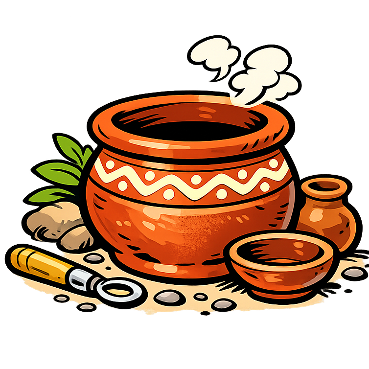

<h2 class="book-page-title" data-book-bind="technology.pottery.label"></h2>
<p>

La poterie permet de produire des récipients pour conserver la nourriture et constituer de petites réserves.
</p>
<p>

Permet de construire une <span data-book-bind="building.grange.label"></span>, qui stocke jusqu'à <span data-book-bind="building.grange.resourceStorageCapacities.food"></span> unités de nourriture. Elle coûte :</p>
<p>

<span data-book-bind="building.grange.buildCost.lumber"></span>
</p>
